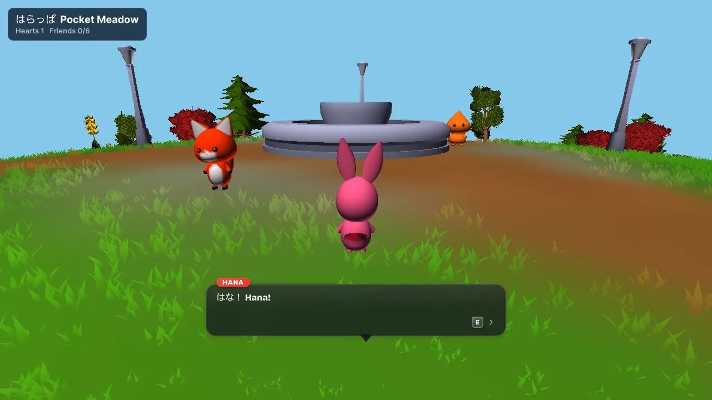
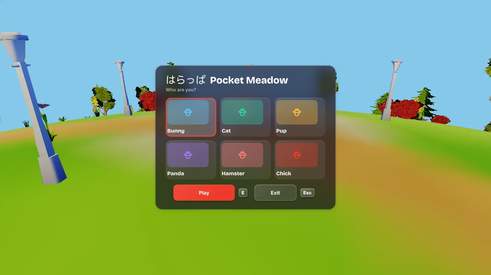
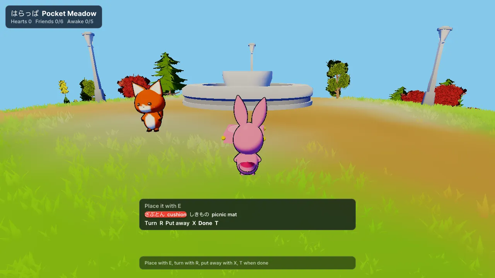
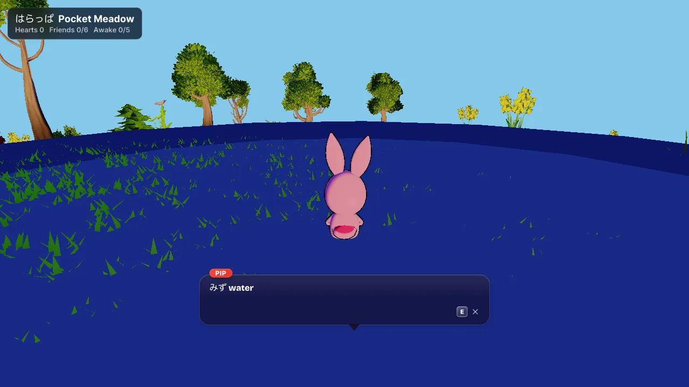
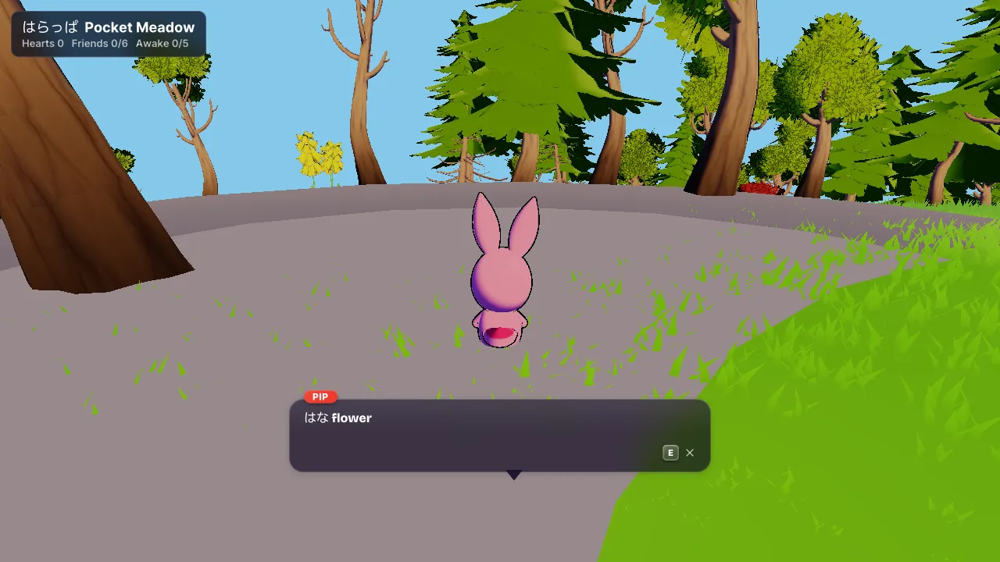
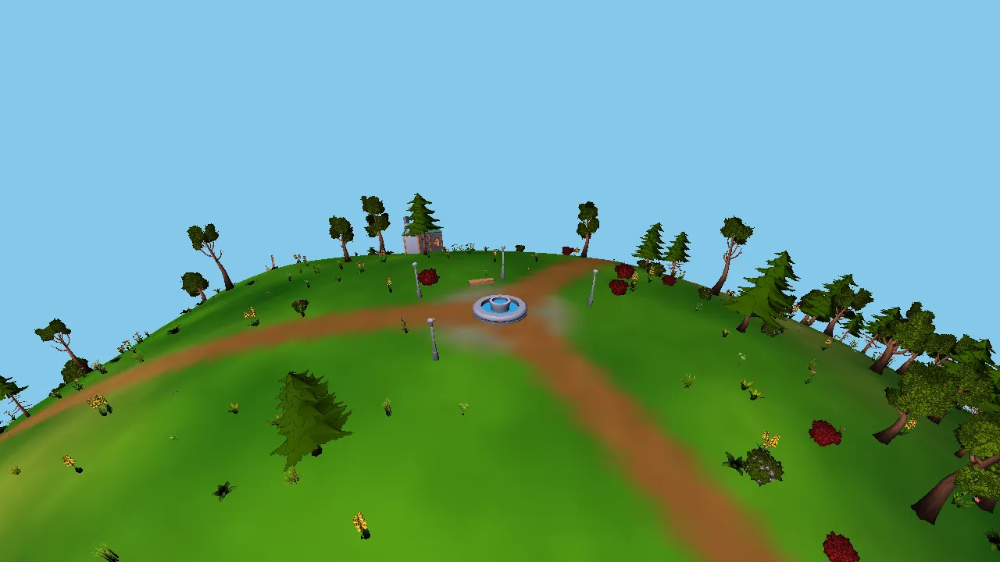

Learn Japanese
with small friends.
Kamikin is a themed language learning and education game for ages 5 to 9. Mochi friends on a round meadow teach you Japanese words, and every line comes with Yakopop subtitles that show how each word reads and what it means.
Pick a friend on the right.
The game
Kamikin is the cute mochi universe for young kids, the first game of the Kosmica line. It is also a way to meet Japanese words, one at a time. Ages 5 to 9 and families; no combat and no way to fail.
Walk a round world in the port
Radial gravity: the horizon curves and a lap is short. A chase camera follows you; Space jumps.
Wake grey patches with words in the port
Five patches start grey, still asleep. Say or pick a patch's word and colour comes back in a ring. A kamikin buds off whatever woke.
Befriend, in four steps in the port
Hello, snack, play, nap. Then the friend follows you. Pip, the guide, walks with you from the start.
Kamikin Book and decorating in the port
B opens the book of friends. Eight decor pieces (a cushion, a picnic mat, a little house and more) are gifts from woken patches. There is no shop and no money.
Songs and the Lantern Festival prototype
Song night and the festival run as show stretches with sound, but the film's stages and cast are not drawn yet.
Season 1: Lantern Village and seven episodes planned
A village hub with a station, cafe, bakery and grocery as blockout interiors, and seven short episodes. This is a design document, not a shipped season.
- Genre
- Cozy friendship and word play
- Audience
- Ages 5 to 9, rated kids
- Engines
- Godot slice, Kosmos engine port
- Status
- Prototype, not public



Captures of the Kosmos engine port, 2026-10-16. Scenery is the engine's placeholder kit.
The world
Pocket Meadow (はらっぱ, harappa) is one small jewel-world, sleepy and not sad. Grey means still asleep. Waking is gentle: a word, a song, a game.
The planet in the port
A ball 96 m in radius, painted ground, a sea and thousands of scenery pieces, with grass that moves in wind.
Five patches in the port
- Pondみず, mizu. Water and frogs.
- Flower bankはな, hana. Birdsong.
- Stonesこけ, koke. A ring of stones, crickets.
- Cloud hillくも, kumo. Wind.
- Lantern laneちょうちん, chōchin. Birds.
Each patch has its own ambience layer in the data. The words are from the design spec.
Lantern Village planned
The Season 1 hub: a square, a market street, a station, cafe, bakery and grocery, homes and Obaachan Tsuki's house. Doors for five interiors exist in the planet data; the interiors are blockouts.
The sky prototype
A sky with clouds is in the scene data. The engine port's sky and cloud shaders are not done yet.



Meet the Kamikin
14 mochi, the cast of the game. Pick one to see it in the hero. Each line below is the persona text stored with the character.
Names inside persona lines come from the character data and do not always match the character's name. That is how the data is today.
How they are made
The characters were drawn in code in the game, baked in Rust in the engine, and converted to GLB files here.
- 14characters
- 6face states
- 9clips
- 2meshes each: body, face
Each GLB is a baked, skinned body with a small skeleton (8 to 15 bones, and 37 for one character). The face is a texture swapped between neutral, blink, happy, joy, surprised and sad. Clips: idle, walk, run, hop, happy, wave, sad, sit, dance. The whole set is about 11 MB.
Mochi kit. Cute blobby characters built in code with a drawn dot and oval face, in the yakopop repository.
Kamikin pack and the Godot slice. The Pocket Meadow pilot, then Season 1 in the Godot shell on 2026-10-15.
Kosmos port. A mochi importer in Rust: skinned body, face and baked motions. The planet, grass and cast ran in the engine.
Kamiji. The 14 mochi became GLB files with face textures in this repository.
History source: docs/history.md and docs/kamikin-context.md in the repository.
Learn languages with Kamikin
Kamikin teaches Japanese words through play. The teaching comes from Yakopop, the language learning platform whose repository the game lives in.
Yakopop: word-synced subtitles for language learners.
Source code is a private repository, Modern-Telepathy/yakopop. No docs site or store page is documented yet.
What Yakopop is live
Every word of a subtitle shows its script, reading, romanization, meaning and grammar, and lights up together with the matching part of the translation while the video plays. The repository says it is live at yakopop.com.
Who it is for live
People learning a language from video: Japanese, Mandarin, Korean, Russian, Spanish, Hindi, Nepali, Thai and Tibetan, with 12 interface languages. Kamikin itself is aimed at ages 5 to 9.
The method, as built live
Hover a word for its card, take a practice quiz, review flashcards on a spaced-repetition schedule, and follow a path of lessons with hearts, XP and daily quests. A browser extension overlays the subtitles on streaming sites. The repository lists no study results, so none are claimed here.
How the game uses it prototype
Every new word comes first in Japanese, then in the player's language, in hiragana, with picture choices. The game screens already show lines like はな, flower. Waking a patch by its word is how the game teaches: names wake things.
Season 1 course planned
A draft unit called Lantern Village: Hello Meadow, Pond Friends, Count the Stones, Snack Share and a review, then a song night and a festival, as one week. The lesson pointers exist in code; the course is a draft that still needs a native speaker's read.
Your words in your deck planned
The design sends words you meet in the game to your Yakopop flashcard deck, and shows the deck as stickers. Nothing in the game calls the deck yet.
Characters available
Pip guides, the kamikin are the friends you wake. Their voices are a specification, not recordings.
Yakopop is the learning layer the repositories plan for every Kosmos game, Kamikin included. It is not a "Powered by" claim about a shipped product.
Module 1: Lantern Village
The first module follows six episodes. Each one teaches a handful of Japanese words through a short story, a picture quiz and one play stretch, with the Yakopop subtitle stack on every line.
Plan. From the Season 1 design, unit ja.kamikin-s1. Not public yet. The plan also has a seventh episode, a festival finale that reviews everything.
-
Hello Meadow
Arrive in the grey meadow. Pip teaches you to say hello, you meet Luna at the porch, and you walk to the square to greet everyone.
- げんきgenki · well / fine
- ひろばhiroba · square / plaza
- にほんnihon · Japan
-
Pond Friends
Pip is lost at the pond. Look around, find him, and wake Shizuku.
- みてmite · look!
- きつねkitsune · fox
- みずmizu · water
- かわいいkawaii · cute
-
Count the Stones
The stones have fallen over. Kai asks for three, and you count them back into place.
- ふたつfutatsu · two (things)
- みっつmittsu · three (things)
- いしishi · stone
- これkore · this
- それsore · that
- ちょうちんchōchin · paper lantern
-
Snack Share
Pix will not share. At the café you ask politely, taste something good and make up.
- くださいkudasai · please (give me)
- おいしいoishii · delicious
- あかaka · red
- あおao · blue
- しろshiro · white
- ごめんねgomen ne · I'm sorry
-
Colour Walk
A grocery full of colours and a picnic on the cloud hill. Point at things and name their colours.
No new words: a review episode.
-
Song Night
The friends rehearse a song while Ōakubi yawns. Sing along, then put the friends to bed.
- おやすみoyasumi · good night
Words and readings come from the Yakopop Japanese course content. Which episodes ship in the Godot version is still in progress.
Use them
The characters ship with the Kamiji repository. It is private, so there is no public download, npm package or CDN yet.
Provenance. Who made each Kamikin character, with which tools and when, is still to be confirmed (assets/PROVENANCE.md). Do not rely on these for public release until that is recorded.
- Characters and assets: free for non-commercial use under CC BY-NC 4.0, with credit.
- For-profit apps need the paid Premium Licence. It is a draft term sheet, not yet a contract. Contact openartist@gmail.com.
- Code: MIT.
- "Kamikin" and "Kamiji" are trademarks of Paul Bloch. Registration status: not yet filed.
Credit line: "Kamikin by Paul Bloch", with a link to the licence and a note of any changes. Full text is in LICENSE.md, LICENSE-COMMERCIAL.md and TRADEMARKS.md.
Back to Kamiji, the 3D hand Live gallery of all models Kamikin studio
A Kamikin plush with a screen face
Imagine a Kamikin mochi as a plush with a screen face. This is a concept, not a product you can buy.
The Kamikin faces
The screen shows a Kamikin face with the same eyes, mouth and colour as the 3D characters here, and changes between happy, thinking, sleepy and surprised.
Any species
A bear, a bunny, a cat, any Kamikin species or a brand mascot, each with its own screen face in a hand-drawn crayon style.
Draw and speak
Colour dots choose the pen colour and a stylus draws the face. It could speak with the same voice setup as the site.